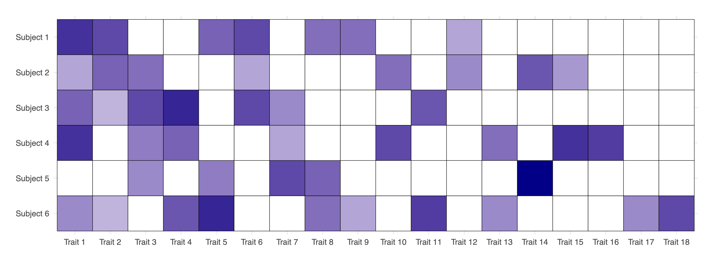
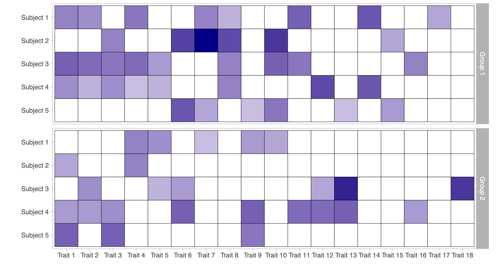
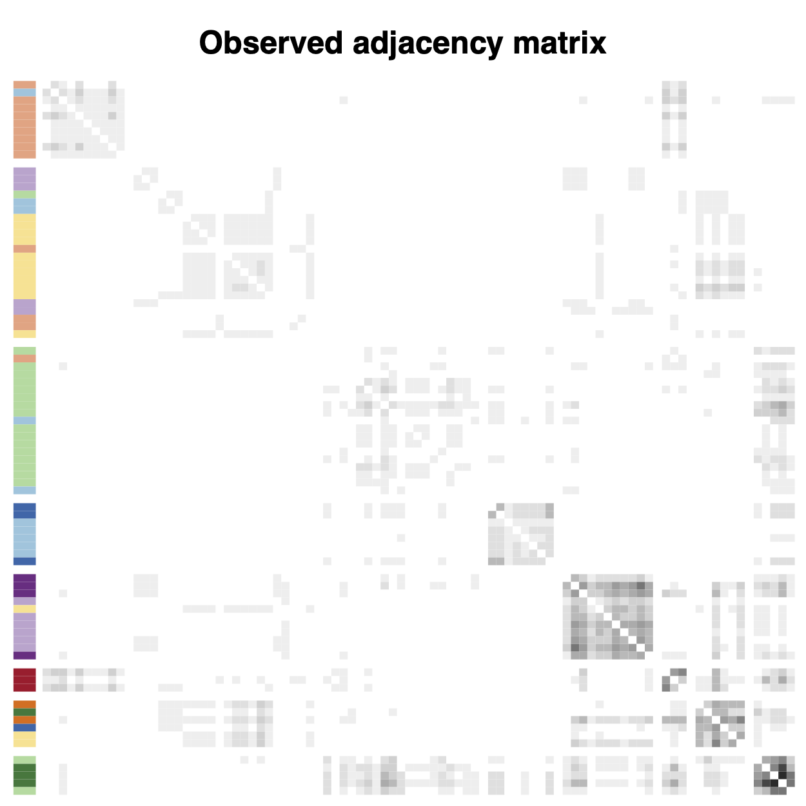
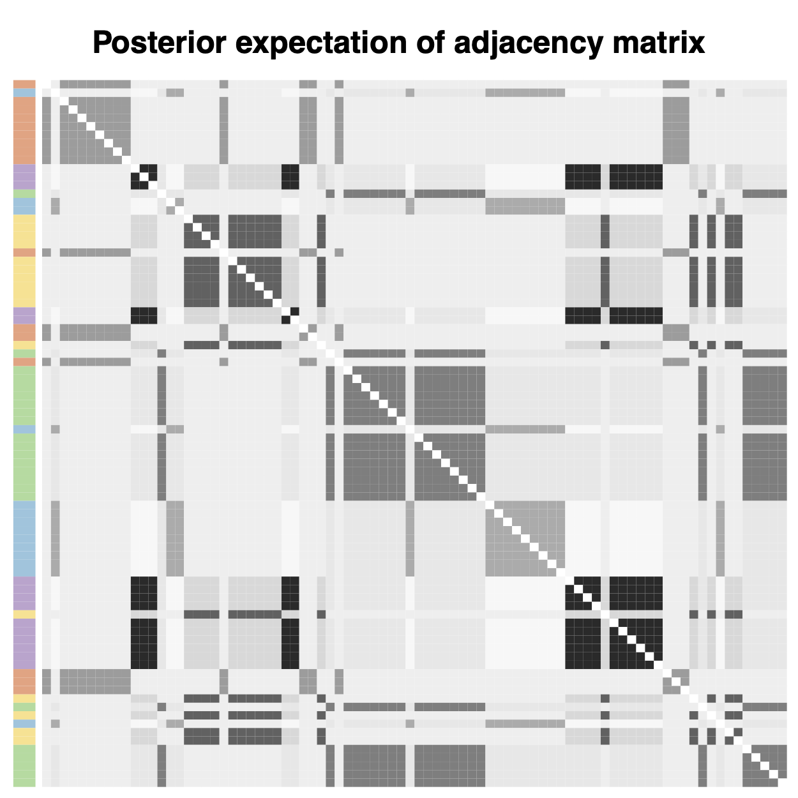
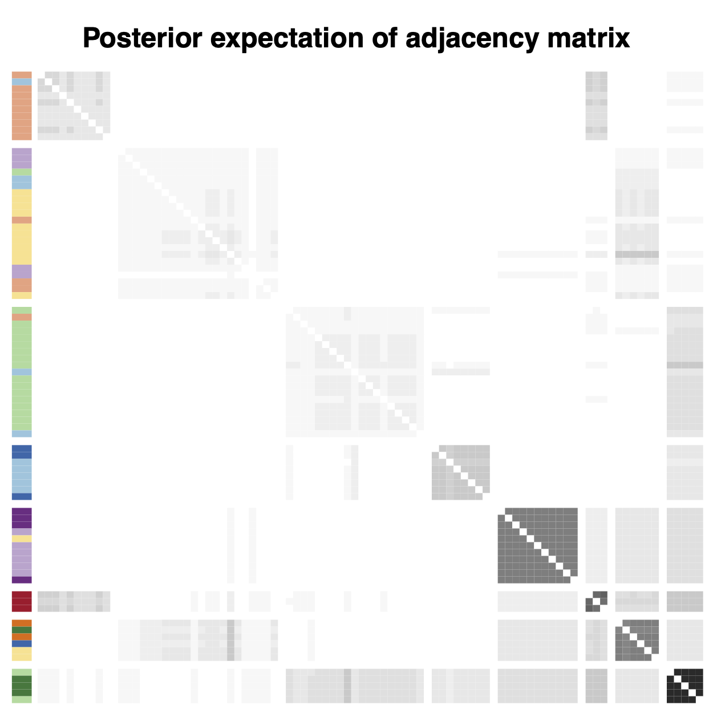
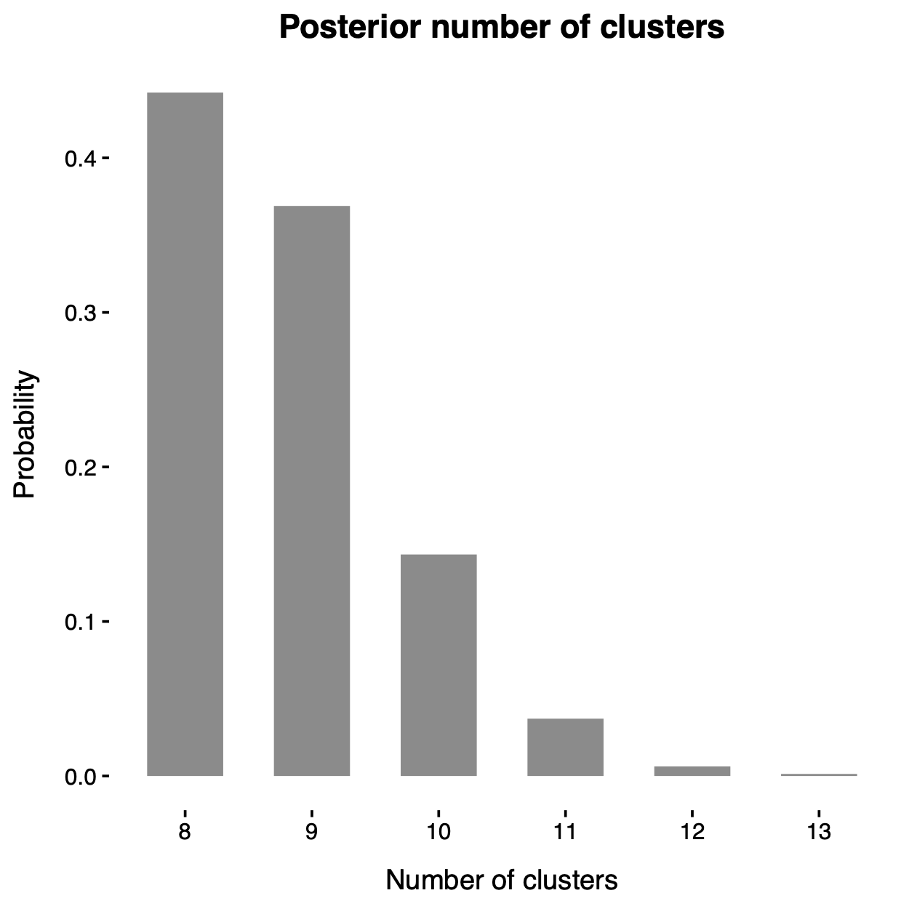

BNP modeling of multivariate count data with unknown traits
Università di Roma la Sapienza
Università degli Studi di Milano-Bicocca
2026-04-09
Warm thanks
Lorenzo Ghilotti (Duke University)
Federico Camerlenghi (University of Milano-Bicocca)
Michele Guindani (University of California Los Angeles)

Overview
- This work proposes a model-based Bayesian nonparametric approach to clustering count data in the presence of missing information (i.e., unknown traits), following the roadmap below:
- We extend these models to the case of known groups, deriving closed-form expressions for the posterior distribution.
- We consider the case of unknown groups (clustering) by placing a Bayesian nonparametric prior on the latent partition. This is connected to latent class analysis with missing information.
- We illustrate the practical relevance of this methodology through an application to the criminal network from the Operazione Infinito investigation.
Trait allocation models
Exchangeable trait allocation models
- Exchangeable trait allocation models (Campbell et al. 2018; James 2017) describe how traits are distributed across n subjects, with presence reflecting trait abundance.
- We observe n subjects and K_n = k traits. The data are represented by an n \times k matrix \bm{A}, where A_{i\ell} \in \{0,1,2,\ldots\}, \qquad i=1,\dots,n,\quad \ell=1,\dots,k, denotes the count of trait \ell for subject i. We also assign a label, denoted X_\ell, to each trait.
- The number of traits (columns) is random, because some traits may remain unseen.
Let (\tilde{X}_j)_{j \geq 1} denote the sequence of all possible trait labels and let \tilde{A}_{ij} \in \{0, 1, 2, \dots\} represent the abundance of trait \tilde{X}_j in subject i. These are latent variables.
The observed traits X_1, \dots, X_{K_n} form a subsample of the latent traits (\tilde{X}_j)_{j \geq 1}. A trait \tilde{X}_j is observed only if \tilde{A}_{ij} > 0 for at least one subject.
Similarly, we say that trait \ell is absent in subject i if and only if A_{i\ell} = 0. Each column of \bm{A} must contain at least one non-zero entry, otherwise the trait would be unseen.
Data from an exchangeable trait model

- Observed data from an exchangeable trait model: matrix of counts \bm{A}, with n = 6 subjects and K_n = 18 observed traits. White cells indicate the absence of a trait for a given subject, while darker shades of blue represent higher values of the corresponding counts A_{i\ell} \in \{1, 2,\dots\}.
Model specification
The latent traits \tilde{A}_{ij}, given a sequence of parameters (\theta_j)_{j \geq 1}, are conditionally iid across subjects for any fixed j, that is \tilde{A}_{ij} \mid \theta_j \overset{\textup{iid}}{\sim} P(\cdot\,; \theta_j), \qquad i \geq 1, and they are also conditionally independent across traits (columns) for j \geq 1.
Here, P(\cdot\,; \theta) denotes any parametric distribution supported on the non-negative integers, such as a Poisson distribution, depending on a positive parameter \theta > 0.
Example: exchangeable binary traits
In our application, we track the attendance of ’Ndrangheta affiliates (subjects) at various meetings (traits), where observed traits correspond to meetings attended by at least one affiliate.
In this case study, the count measurement \tilde{A}_{ij} are binary. Thus, we let \tilde{A}_{ij} \mid \theta_j \overset{\textup{iid}}{\sim} \text{Bernoulli}(\theta_j) for i \ge 1 and any fixed j with success probabilities \theta_j \in (0, 1).
Discrete random measure representation
We organize the pairs (\tilde{A}_{ij}, \tilde{X}_j) for j \ge 1 by means of subject-specific counting measures (Z_i)_{ i \ge 1}: Z_i(\cdot) = \sum_{j\geq 1} \tilde{A}_{ij} \delta_{\tilde{X}_j}(\cdot), where \delta_x denotes the Dirac delta mass.
Moreover, the parameters (\theta_j)_{j \ge 1} can be organized in a discrete measure \tilde{\mu} defined as \tilde{\mu}(\cdot) = \sum_{j \geq 1} \theta_j \delta_{\tilde{X}_j}(\cdot).
Summarizing, the full Bayesian specification is \begin{aligned} Z_i\mid \tilde{\mu} &\overset{\textup{iid}}{\sim} \textup{CP} (\tilde{\mu}), \qquad i \ge 1,\\ \tilde{\mu} &\sim \mathcal{Q}, \end{aligned} which means that Z_i are iid from a process of counts (CP) with parameter \tilde{\mu}. Here \mathcal{Q} denotes the de Finetti measure, i.e., the prior distribution of the random measure \tilde{\mu}.
Partially exchangeable trait allocation models
Let d be the number of subpopulations (groups), and suppose we observe a sample of size n, with n_q subjects from group q, for q = 1, \ldots, d, so that \sum_{q=1}^d n_q = n.
Let K_n = k denote the total number of traits observed across all subjects and groups. The data can be represented by a collection of matrices \bm{A}_q, each of dimension n_q \times k, with entries A_{i\ell q} \in \{0, 1, 2, \ldots\}, \qquad i = 1,\dots, n, \quad \ell = 1,\dots,k, \quad q=1,\dots,d, denotes the count of trait \ell for the ith subject in group q.
As before, let (\tilde{X}_j)_{j \geq 1} denote the sequence of latent traits and let \tilde{A}_{ijq} \in \{0, 1, 2, \dots\} be the abundance of trait \tilde{X}_j for subject i in group q.
In a sample of size n, a trait \tilde{X}_j is observed only if \tilde{A}_{ijq} > 0 for at least one subject in any group.
Example: known-groups binary traits
This known-group structure (partial exchangeability) is well suited to the ’Ndrangheta data, where affiliates are grouped by membership in specific locali.
Data from a partially exchangeable trait model

- Observed data from a partially exchangeable trait model (d = 2): two matrices of counts \bm{A}_1 and \bm{A}_2, each with n_1 = n_2= 5 subjects and K_n = 18 observed traits.
Model specification (known groups)
The latent traits \tilde{A}_{ijq}, given the sequences of parameters (\theta_{j1})_{j \geq 1}, \dots, (\theta_{jd})_{j \geq 1}, are conditionally iid across subjects belonging to the same group and for a given trait j and group q, that is \tilde{A}_{ijq} \mid \theta_{jq} \overset{\textup{iid}}{\sim} P(\cdot\,; \theta_{jq}), \qquad i \geq 1, and they are also conditionally independent across traits for j \geq 1 and subpopulations q = 1,\dots,d.
Thus, the main difference compared to the exchangeable case is that the random variables \tilde{A}_{ijq} have different parameters when they refer to subjects belonging to different subpopulations.
As before, we organize these quantities into counting measures Z_{iq}(\cdot) = \sum_{j \ge 1} \tilde{A}_{ijq} \, \delta_{\tilde{X}_j}(\cdot) for each subject i in subpopulation q, with i \geq 1 and q = 1, \ldots, d. Moreover, the parameters (\theta_{jq})_{j \ge 1} can be organized in a group-specific discrete measure \tilde{\mu}_q(\cdot) = \sum_{j \geq 1} \theta_{jq} \delta_{\tilde{X}_j}(\cdot) for q=1,\dots,d.
The full Bayesian specification for partially exchangeable data (known groups) is \begin{aligned} Z_{iq} \mid \tilde{\mu}_q & \overset{\textup{ind}}{\sim} \textup{CP} (\tilde{\mu}_q), \qquad i\geq 1, \quad q=1,\ldots,d,\\ (\tilde{\mu}_1,\ldots,\tilde{\mu}_d) &\sim \mathcal{Q}_d, \end{aligned} where \mathcal{Q}_d denotes the prior distribution.
Prior specification I
We assume the total number of traits in the population, denoted with N, is finite and random. If K_n = k traits are observed, the number of unseen traits equals N-k.
Hence, there will be a finite collection of latent traits \tilde{A}_{i1q}, \dots, \tilde{A}_{iNq} for each subject and group, with associated parameters \theta_{1q},\dots,\theta_{Nq} for q = 1,\dots,d.
Moreover, we assume N is a Poisson random variable with parameter \lambda>0. In other terms, the group-specific measures \tilde{\mu}_q take the form \tilde{\mu}_q(\cdot) = \sum_{j=1}^{ N} \theta_{jq} \delta_{\tilde{X}_j}(\cdot), \qquad N \sim \mathrm{Poisson}(\lambda), as q=1,\ldots,d.
Moreover, we assume the parameters \theta_{jq} are iid draws from a probability law H(\cdot\,;\psi), namely \theta_{jq} \overset{\textup{iid}}{\sim} H(\cdot\,;\psi), \qquad j = 1,\dots,N, \quad q=1,\dots,d, where \psi is a common hyperparameter sometimes endowed with a hyperprior.
Prior specification II
We assign a prior to the atoms \tilde{X}_j, which only label traits; it suffices that they are almost surely distinct, e.g., \tilde{X}_j \overset{\textup{iid}}{\sim} P_0 with P_0 non-atomic.
This specification is linked with infinite-dimensional trait models (James 2017; Shen et al. 2025).
Indeed, (\tilde{\mu}_1,\ldots,\tilde{\mu}_d) is a finite completely random vector (FCRV), a special case of completely random vectors (Catalano et al. 2021), crucially relying on the Poisson specification for N.
More precisely, \tilde{\bm{\mu}} = (\tilde{\mu}_1,\ldots,\tilde{\mu}_d) can be interpreted as an FCRV with parameters H^{(d)} = H(\cdot\,;\psi) \times \cdots \times H(\cdot\,; \psi), \lambda, and P_0, and we write \tilde{\bm{\mu}} \sim \textup{FCRV}(H^{(d)}, \lambda, P_0).
This connection is relevant because as our results follow from a general CRV theory with Lévy intensities of the form \rho_d(\mathrm{d}\theta_1 \cdots \mathrm{d}\theta_d)\,\lambda P_0(\mathrm{d}x), where \rho_d may be infinite.
This framework covers both finite- and infinite-dimensional models; we focus on the finite case \rho_d = H^{(d)} (a probability distribution), enabling estimation of the total number of traits, while Shen et al. (2025) consider the infinite-dimensional setting.
Distribution theory
The augmented likelihood function
If all traits were known (no missing information), the model would be extremely simple: a collection of independent random variables, with an easily computable augmented likelihood.
Let \tilde{\bm{A}} = (\tilde{A}_{ijq} : i = 1, \dots, n_q; j = 1, \dots, N; q = 1, \dots , d) denote the latent counts whose realization is \tilde{\bm{a}} and let \mathcal{A} = \{j : \sum_{q=1}^d \sum_{i=1}^{n_q} \tilde{a}_{ijq} > 0\} denote the indices of observed traits.
- The augmented likelihood function \mathscr{L}(\bm{\theta}, N; \tilde{\bm{a}}) given the parameters \bm{\theta} = (\theta_{jq} : j=1,\dots,N; q = 1,\dots,d) and N, for the event (\tilde{\bm{A}} = \tilde{\bm{a}}, K_n = k) is \mathscr{L}(\bm{\theta}, N; \tilde{\bm{a}})= \prod_{q=1}^d \prod_{j=1}^N\prod_{i=1}^{n_q}P(\tilde{a}_{ijq};\theta_{j q})= \left[\prod_{q=1}^d\prod_{j \not\in \mathcal{A}} P(0;\theta_{j q})^{n_q}\right]\left[ \prod_{q=1}^d \prod_{j\in \mathcal{A}}\prod_{i=1}^{n_q}P(\tilde{a}_{ijq};\theta_{j q})\right]. In the last term, the first product accounts for unobserved traits, while the second corresponds to observed ones.
- Remark. Combining the augmented likelihood with the iid priors H(\mathrm{d}\theta;\psi), integrating over \bm{\theta} and N \sim \text{Poisson}(\lambda), and summing over all \mathcal{A}, we obtain the marginal probability of (\bm{A} = \bm{a}, K_n = k).
Marginal distribution
Theorem (Marginal distribution; Ghilotti et al. (2025b))
Let \bm{Z} be a sample from the partially exchangeable model, with \tilde{\bm{\mu}} \sim \textup{FCRV}(H^{(d)}, \lambda, P_0) and H^{(d)}(\cdot\,;\psi) = H(\cdot\,;\psi) \times \cdots \times H(\cdot\,; \psi).
The probability that \bm{Z} displays K_n = k distinct traits with counts \bm A = \bm{a} is given by \begin{split} \pi_n (\bm{a}; \lambda, \psi) = \frac{\lambda^k}{k!} \exp \left\{ -\lambda \left( 1-\prod_{q=1}^d \int P (0 ; \theta)^{n_q} H (\mathrm{d}\theta; \psi) \right) \right\} \prod_{\ell=1}^k \prod_{q=1}^d \int \prod_{i=1}^{n_q} P (a_{i\ell q} ; \theta) H(\mathrm{d} \theta; \psi), \end{split} where n=\sum_{q=1}^d n_q and \bm{n}=(n_1, \ldots , n_d) are the sample sizes.
The quantity \pi_n (\bm{a}; \lambda, \psi) is the marginal likelihood of (\lambda, \psi) based on the observed data.
Informally, it can be regarded as the “normalizing constant” of the posterior of \tilde{\bm{\mu}}.
This is related to the partially Exchangeable Partition Probability Function (pEPPF) discussed in Franzolini et al. (2025) for partially exchangeable species sampling models.
Example: binary traits I
Suppose the traits are binary and P(a;\theta) = \theta^a(1-\theta)^{1-a}, for a \in \{0, 1\}, meaning that \tilde{A}_{ijq} \overset{\textup{ind}}{\sim} \text{Bernoulli}(\theta_{jq}), \qquad i \ge 1, \quad j=1,\dots,N, \quad q = 1,\dots,q.
The marginal law of \bm{Z} depends on the sufficient statistic given by the feature frequencies, where M_{\ell q} := \sum_{i=1}^{n_q} A_{i\ell q} (with observed values m_{\ell q}) are collected in matrices \bm{M} and \bm{m}.
- Suppose the prior H(\cdot;\psi) is a Beta distribution with parameters \psi = (-\alpha, \alpha+\beta), i.e., \theta_{jq} \overset{\textup{iid}}{\sim} \text{Beta}(-\alpha, \alpha + \beta), \qquad j=1,\dots,N, \quad q=1,\dots,d.
- Then, the marginal probability that \bm{Z} displays K_n = k distinct traits with feature frequencies \bm M = \bm{m} is \begin{split} \pi_n (\bm{m}; \lambda, \psi) = \frac{\lambda^k}{k!} \exp \left\{ -\lambda \left[1- \prod_{q=1}^d \frac{(\alpha + \beta)_{n_q}}{(\beta)_{n_q}} \right]\right\} \prod_{\ell=1}^k \prod_{q=1}^d \frac{-\alpha}{(\beta)_{n_q}}(1-\alpha)_{m_{\ell q}-1}(\alpha + \beta)_{n_q - m_{\ell q}}, \end{split} where (a)_n = a(a+1)\cdots(a+n-1) is the ascending factorial with a > 0.
Posterior distribution
Theorem (Posterior distribution; Ghilotti et al. (2025b))
Let \bm{Z} be a sample from the partially exchangeable model with prior \tilde{\bm{\mu}} \sim \textup{FCRV}(H^{(d)}, \lambda, P_0) and H^{(d)}(\cdot\,;\psi) = H(\cdot\,;\psi) \times \cdots \times H(\cdot\,; \psi).
If \bm{Z} displays K_n = k distinct traits labeled X_1, \ldots , X_k, with associated counts \bm{a}, then the posterior distribution of \tilde{\bm\mu} satisfies the distributional equality (\tilde{\mu}_1, \ldots, \tilde{\mu}_d) \mid \bm{Z} \stackrel{d}{=} (\mu_1^*, \ldots, \mu_d^*) + (\mu_1', \ldots, \mu_d'), where \bm{\mu}^*:= (\mu_1^*, \ldots, \mu_d^*) and \bm{ \mu}':=(\mu_1', \ldots, \mu_d') are independent random vectors such that
the components of the vector \bm{\mu}^* are defined as \mu_q^*(\cdot) = \sum_{\ell=1}^k \theta_{\ell q}^* \delta_{X_\ell}(\cdot), for q=1, \ldots , d, and the random variables \theta^*_{\ell q} are independent with distribution H_{\ell q} (\mathrm{d}\theta;\psi) \propto \prod_{i = 1}^{n_q} P(a_{i\ell q}; \theta) H(\mathrm{d}\theta; \psi).
the vector (\mu_1', \ldots, \mu_d') is a \textup{FCRV} (H^{\prime(d)}, \lambda', P_0), where H^{\prime(d)}(\cdot\,;\psi) = H_1^\prime(\cdot\,;\psi) \times \cdots \times H_d^\prime(\cdot\,;\psi), \lambda' = \lambda \prod_{q=1}^d \int P(0; \theta)^{n_q} H(\mathrm{d}\theta; \psi), \quad H'_q(\mathrm{d}\theta; \psi) \propto P(0; \theta)^{n_q} H(\mathrm{d}\theta;\psi).
Example: binary traits II
Suppose the traits are binary and assuming a beta prior law H(\cdot;\psi) with parameters (-\alpha, \alpha + \beta).
The posterior distribution of \tilde{\bm{\mu}} given \bm{Z} decomposes as the sum of \bm{\mu}^* and \bm{\mu}', as in the general case.
- The probabilities \theta^*_{\ell q} of re-observing an old feature X_\ell are distributed as \theta^*_{\ell q} \overset{\textup{ind}}{\sim} \text{Beta}(m_{\ell q} - \alpha, \alpha + \beta + n_q - m_{\ell q}), for \ell=1,\dots,k, q=1,\dots,d.
- Each \mu_q^\prime = \sum_{j=1}^{N^\prime} \theta_{j q}^\prime \delta_{\tilde{X}_j^\prime}(\cdot), which governs unobserved traits in subpopulation q, have a tractable form. In particular, the distribution of the number of unseen features N^\prime = N - k is N^\prime \sim \text{Poisson}(\lambda^\prime), \qquad \lambda^\prime = \lambda \prod_{q=1}^d \frac{(\alpha + \beta)_{n_q}}{(\beta)_{n_q}}, whereas the probabilities of observing these traits are distributed as \theta_{jq}^\prime \overset{\textup{iid}}{\sim} \text{Beta}(-\alpha, \alpha + \beta + n_q).
Clustering trait allocation models
From known-groups to unknown groups
The partially exchangeable framework accommodates group-structured data by assuming homogeneity within predefined subpopulations.
In practice, however, either no grouping is known or the given partition may be inadequate. In such cases, one can instead learn the group structure from the data.
In the ’Ndrangheta application, affiliates can be grouped by their membership in locali.
However, it is worth assessing whether this external partition reflects the structure of meeting attendance. Discrepancies between inferred clusters and locali may reveal unrecognized collaborations or new cross-group dynamics.
We consider an unknown-groups setting by embedding the partially exchangeable model in a Bayesian clustering framework, enabling cluster detection while accounting for unseen traits.
Our goal is to infer a partition of the subjects Z_1, \ldots, Z_n, rather than relying on predefined groups.
Model specification (unknown groups)
Let \bm{C} = {C_1,\dots,C_d} be a partition of \{1,\dots,n\}, where i,i’ \in C_q iff subjects i and i’ belong to the same group.
Let n_q = |C_q| be the size of cluster q, with \sum_{q=1}^d n_q = n. If \bm{C} is known, we recover the known-groups setting.
When \bm{C} is unknown, we place a prior on it, so both the cluster memberships and the number of groups d are random and learned from the data.
Conditionally on \bm{C} = {C_1,\dots,C_d}, for a fixed trait j and group q, we assume, as in the known-groups case, that \tilde{A}_{ij} \mid \theta_{jq} \overset{\textup{iid}}{\sim} P(\cdot; \theta_{jq}),\qquad i \in C_q. Moreover, as in the known-group case, we let N \sim \text{Poisson}(\lambda), \qquad \theta_{jq} \overset{\textup{iid}}{\sim} H(\cdot\,;\psi), \qquad j = 1,\dots,N, \quad q=1,\dots,d,
Random partitions
Among the various prior for \bm{C}, we consider the prior induced by a Pitman–Yor process (Perman et al. 1992; Pitman and Yor 1997), which stands for its analytical tractability and whose density is \mathbb{P}(\bm{C} = \{C_1,\dots,C_d\}) =\frac{\prod_{q=1}^{d-1}(\gamma + q\sigma)}{(\gamma + 1)_{n-1}}\prod_{q=1}^d(1 - \sigma)_{n_q-1}, where \gamma > -\sigma, \sigma \in [0, 1).
Note that the number of groups 1 \le d \le n is itself a random variable and there is no upper bound other than the sample size.
The above expression is referred to as exchangeable partition probability function Pitman (1996).
When \sigma = 0, the Pitman–Yor process reduces to a Dirichlet process (Ferguson 1973).
Hierarchical representation and mixture models
We can equivalently express this model in a hierarchical form \begin{aligned} Z_i \mid \mu_i & \overset{\textup{ind}}{\sim} \textup{CP}(\mu_i), \qquad \mu_i \mid \tilde{p} \overset{\textup{iid}}{\sim} \tilde{p}, \qquad i \ge 1,\\ \tilde{p} &\sim \mathcal{P}, \end{aligned} where \tilde{p} is a discrete random probability measure, and \mathcal{P} denotes its prior distribution. More precisely, we assume that \tilde{p}(\cdot) = \sum_{h \geq 1} \xi_h \delta_{\eta_h}(\cdot), where (\xi_h)_{h \geq 1} are probability weights, and (\eta_h)_{h \geq 1} are random measures \eta_h = \sum_{j=1}^N\phi_{jh}\delta_{\tilde{X}_j}.
The weights \xi_h represent prior clustering probabilities, with \xi_h giving the probability that \mu_i is drawn from the hth component of \tilde{p}, i.e., \mu_i = \eta_h.
They follow the stick-breaking representation of the Pitman–Yor process: \xi_h = V_h \prod_{r=1}^{h-1}(1 - V_r), where V_h \sim \text{Beta}(1 - \sigma, \gamma + h\sigma) and \xi_1 = V_1.
We assume that any d-dimensional subset of (\eta_h)_{h \geq 1} follows (\tilde{\eta}_1,\ldots,\tilde{\eta}_d) \sim \textup{FCRV}(H^{(d)}, \lambda, P_0).
Hierarchical representation and mixture models
Remark. The discreteness of \tilde{p} implies that there is a positive probability that \mu_i and \mu_{i'} are be identical, inducing clustering among the observations Z_1,\dots,Z_n.
By employing an exchangeable prior for \bm{C}, we are implicitly returning to an exchangeable framework \begin{aligned} Z_i \mid \tilde{p} &\overset{\textup{iid}}{\sim} \int \textup{CP} (\mu)\tilde{p} (\mathrm{d} \mu) \\ % \textup{CPM} (\tilde{p}), \qquad i \ge 1,\\ \tilde{p} &\sim \mathcal{P}, \end{aligned} where the subjects Z_i are conditionally iid draws from a process of counts mixture.
This model is far more flexible than the known-group, where Z_i \mid \tilde{\mu} \overset{\textup{iid}}{\sim} \textup{CP}(\tilde{\mu}). Indeed, we have that Z_i(\cdot) = \sum_{j=1}^N \tilde{A}_{ij}\delta_{\tilde{X}_j}(\cdot) and \mathbb{P}(\tilde{A}_{i1} = \tilde{a}_1,\dots,\tilde{A}_{iN} = \tilde{a}_N\mid \tilde{p}) = \sum_{h \ge 1} \xi_h \prod_{j=1}^NP(\tilde{a}_j; \phi_{jh}), \qquad i \ge 1, where the random vectors (\tilde{A}_{i1},\dots, \tilde{A}_{iN}) for i \ge 1 are conditionally iid from the above law.
The proposed Bayesian model defined is related to latent class analysis (LCA).
Ignoring the unseen traits
However, LCA assume that N is a known constant, meaning that all traits are known in advance, including those equal to zero for all subjects. Ignoring unseen traits can skew the analysis.
Consider the following predictive allocation probabilities: p_{iq} = \mathbb{P}(\mu_i = \tilde{\mu}_q \mid \bm{Z}, \bm{\mu}_{-i}), \qquad p_{i,\text{new}} = \mathbb{P}(\mu_i = \text{``new''} \mid \bm{Z}, \bm{\mu}_{-i}), \qquad i=1,\dots,n, where \bm{\mu}_{-i} = (\mu_1,\dots\mu_{i-1},\mu_{i+1},\dots,\mu_n) with d_{-i} distinct values \tilde{\mu}_1,\dots,\tilde{\mu}_{d_{-i}}, for q = 1,\dots,d_{-i}.
We similarly define p_{iq}^* and p_{i,\text{new}}^* for the naïve model in which it is wrongly assumed that all traits are observed with N = k.
Proposition (Ghilotti et al. 2025b)
The predictive allocation probabilities for a generic subject i under the proposed and a naïve model in which it is assumed that there are no unseen traits, with N = k, satisfy the inequality: \frac{p_{i,\textup{new}}}{p_{iq}} < \frac{p_{i,\textup{new}}^*}{p_{iq}^*}, \qquad q=1,\dots,d_{-i}, \quad i=1,\dots,n.
Markov Chain Monte Carlo algorithm
- Posterior inference for the partition \bm{C} rely on a simple Gibbs sampling algorithm.
- We iteratively sample the labels of \mu_i \mid \bm Z, \bm{\mu}_{-i} for i=1,\dots,n according to the full conditional probabilities p_{iq} and p_{i,\text{new}}, which are proportional to p_{iq} \propto \frac{n_{q,-i} - \sigma}{n + \gamma - 1}\,\pi_n(\bm{a}_{iq}; \lambda, \psi), \qquad p_{i,\textup{new}} \propto \frac{\gamma + d_{-i}\sigma}{n+\gamma-1}\,\pi_n(\bm{a}_{i,\textup{new}}; \lambda, \psi), where \bm{a}_{iq} denotes the observed trait values organized according to the partition \bm{C}_{-i}, with subject i allocated to cluster q. Similarly, \bm{a}_{i,\textup{new}} corresponds to the trait values organized according to the partition \bm{C}_{-i} when subject i is assigned to a new cluster.
This scheme is straightforward thanks to the closed-form expression of \pi_n(\bm a; \lambda, \psi).
When hyperpriors are placed on the parameters \lambda and \psi, the MCMC scheme described above is coupled with updates of \lambda and \psi from their respective full conditional distributions.
- Any other quantity of interest, such as N or \theta_{jq}, can be easily sampled as a post-processing step exploiting the posterior representation.
Infinito network
Operazione Infinito dataset
- The data stem from Operazione Infinito (Calderoni et al. 2017), a six-year-long, large-scale law enforcement operation aimed at monitoring and dismantling the core structure of La Lombardia, the highly pervasive branch of the ’Ndrangheta Mafia operating in the Milan area.
The attendance of the n affiliates at k distinct meetings can be represented by the n \times k binary matrix \bm{A}, where each entry A_{i\ell} \in \{0, 1\} indicates whether individual i attended meeting \ell.
We are also interested in understanding the implications on the adjacency matrix \bm{W} = \bm{A}\bm{A}^T, whose generic entry W_{ii'} represents the number of meetings jointly attended by affiliates i and i'.
We focus on the d = 5 most populated locali, with sizes n_1 = 16,n_2 = 14, n_3 = 23, n_4 = 15, n_5 = 16, of the Infinito dataset, for a total of n = 84 affiliates and k = 44 recorded meetings among them.
Affiliates’ locale membership defines a natural five-group partition, which we compare with the groups inferred from the mixture model.
Hyperparameter settings and practicalities
We consider models for binary traits, where H(\cdot;\psi) is the beta distribution with parameters (-\alpha, \alpha + \beta), with \psi = (\alpha, \beta).
Prior distributions for the model parameters \lambda, -\alpha, and \alpha + \beta are specified as follows:
- The parameter \lambda, governing the Poisson-distributed total number of meetings, is assigned a gamma prior with parameters (\alpha_\lambda, \beta_\lambda).
- The hyperparameters (\alpha_\lambda, \beta_\lambda) are chosen so that the prior expected value of N equals \hat{N} = 1.5k, where k = 44 denotes the observed number of meetings in the dataset, and the prior variance of N is set to 10\hat{N}.
- For the parameters (a, b) = (-\alpha, \alpha + \beta) of the beta distribution H, independent gamma priors are assumed with hyperparameters (\alpha_a, \beta_a) and (\alpha_b, \beta_b), respectively. Specifically, (\alpha_a, \beta_a) are set to induce a prior mean of 0.2 for a with a large variance, while (\alpha_b, \beta_b) are chosen so that the prior mean of b is 10, also with high variance.
In the mixture model, we additionally set \sigma = 0, corresponding to a Dirichlet process, and \gamma = 1.
For both models, posterior inference relies on 10,000 MCMC iterations, with the first 1,000 samples discarded as burn-in and a thinning interval of 2.
Adjacency matrix of the Infinito network

- Observed adjacency matrix, partitioned according to the VI clustering (Wade and Ghahramani 2018). Side colors correspond to the locali, with darker/lighter shades denoting bosses/affiliates.
Estimated posterior probabilities of co-occurrence

Posterior expectation under a known-groups specification with partition induced by locali membership.
Posterior expectation under an unknown-groups model with groups \bm{C} learned from the data.
Posterior number of clusters

Posterior distribution of the unsees meetings
Final considerations
Thank you!
The main paper is:
Ghilotti, L., Rigon, T., Camerlenghi F., and Guindani M. (2025). Bayesian nonparametric modeling of multivariate count data with an unknown number of traits. arXiv:2510.24526